DBeaver¶
Revisiones
| Revisión | Fecha | Descripción |
|---|---|---|
| 1.0 | 11-10-2025 | Adaptación de los materiales a markdown |
| 1.1 | 14-08-2026 | Ampliación con sección de conexión a SQLite |
Introducción
DBeaver es una herramienta gráfica y gratuita que permite gestionar múltiples bases de datos de forma visual. Algunas de las acciones que podemos realizar con esta herramienta son las siguientes:
- Explorar la estructura de la base de datos (tablas, vistas, claves, relaciones…).
- Consultar datos.
- Modificar tablas, añadir registros o ejecutar scripts SQL.
- Probar consultas antes de implementarlas en el programa.
- Exportar datos en distintos formatos.
Conexión a SQLite¶
Los siguientes pasos muestran como conectar a una BD llamada florabotanica.sqlite:
- Hacer clic en el botón Nueva conexión (enchufe) o ir al menú Archivo > Nueva conexión:
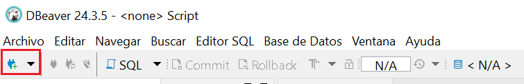
- Seleccionar SQlite y pulsar Siguiente:

- Introducir la ruta de la BD y hacer clic en el botón probar conexión:
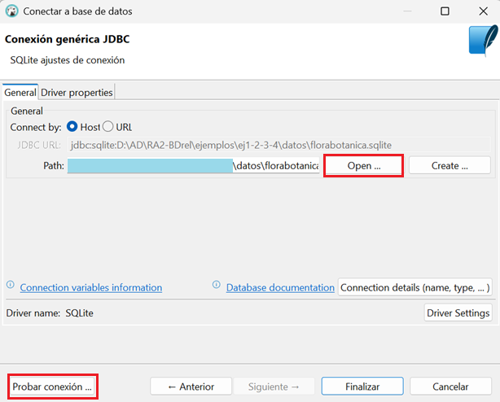
Si todo está correcto, aparecerá un mensaje de éxito:
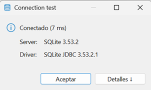
Si DBeaver necesita un controlador (driver), ofrecerá su descarga automáticamente (hacer clic en el botón Download):
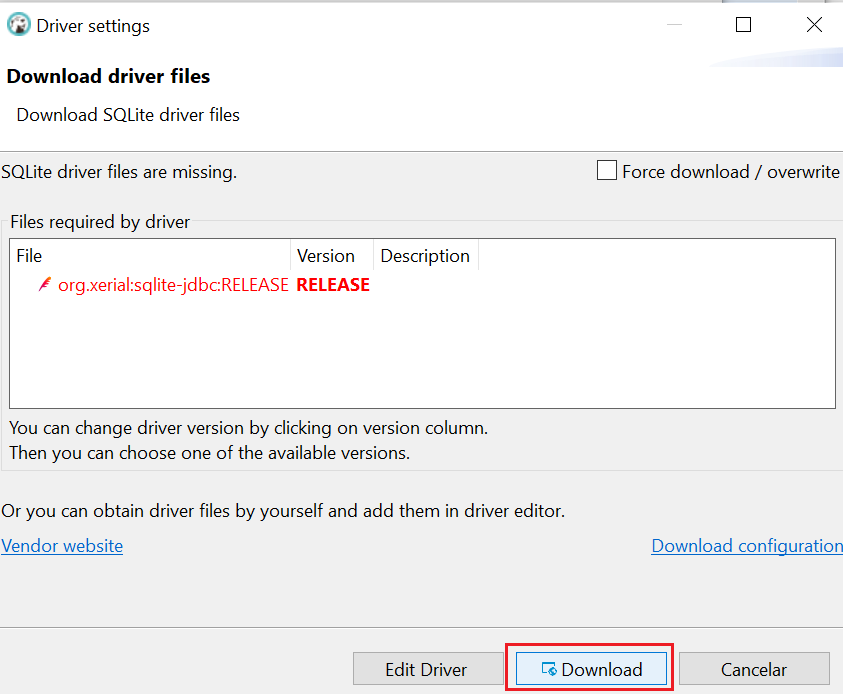
Si la descarga falla, harrá que descargar el archivo sqlite-jdbc-3.50.3.0.jar manualmente desde https://github.com/xerial/sqlite-jdbc/releases y editar el driver para añadirlo:
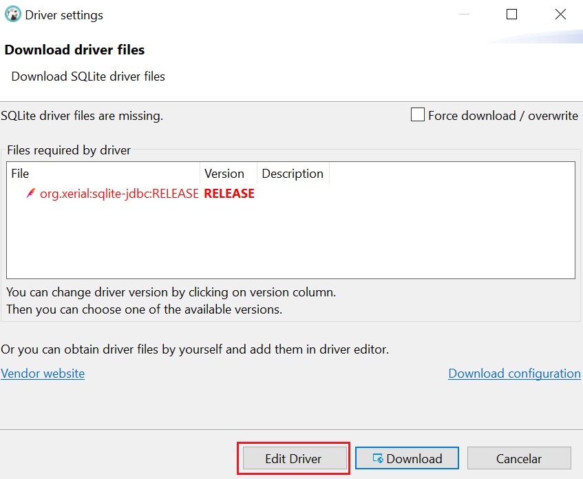
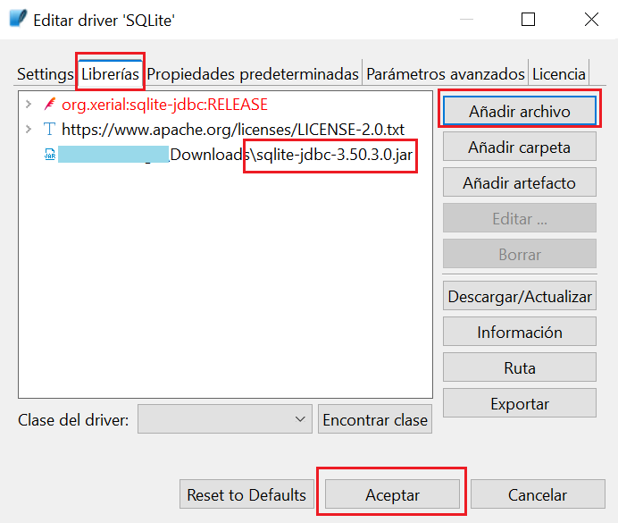
- Una vez la prueba de conexión sea satisfactoria, cerrar el mensaje y hacer clic en el botón Finalizar. La nueva conexión aparecerá en el panel lateral izquierdo y podremos trabajar sobre la BD:
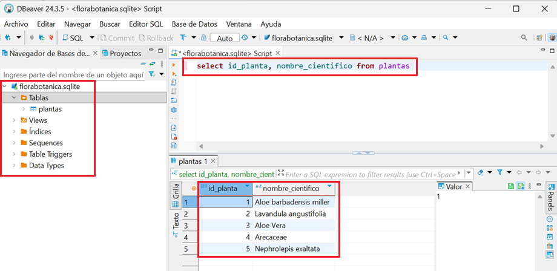
Conexión a MySQL¶
Los siguientes pasos muestran como conectar a una BD MySQL:
- Hacer clic en el botón Nueva conexión (enchufe) o ir al menú Archivo > Nueva conexión:
- Seleccionar MySQL y pulsar en el botón Siguiente:
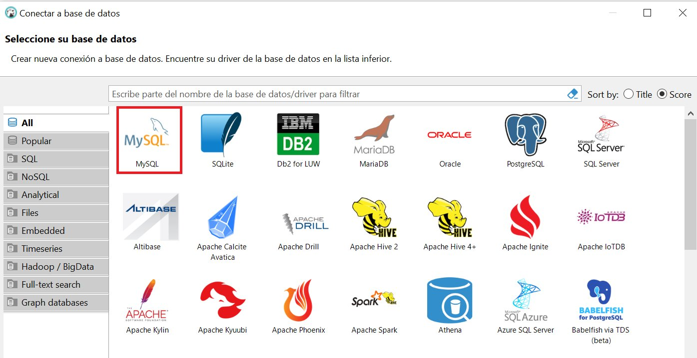
- Indicar los datos del
servidor,usuarioycontraseña. Para ver todas las bases de datos a las que el usuario puede acceder marcar la casillaShow all databasey no indicar nada en la casilladatabase:
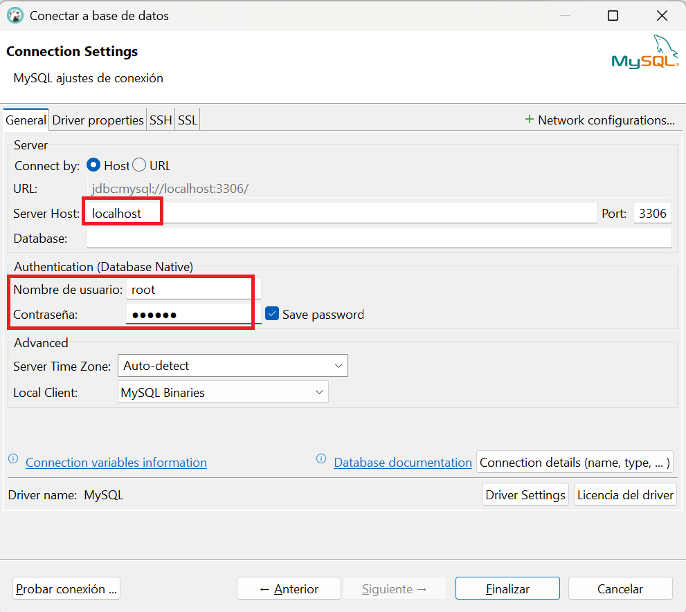
Si aparece
Error "Public Key Retrieval is not allowed"hacer clic con el botón derecho en la conexión y seleccionar Editar conexión luego ir a la pestaña Driver Properties y cambiar la propiedadallowPublicKeyRetrievalaTRUE(por defecto está afalse). Por último hacer clic en el botón Aceptar: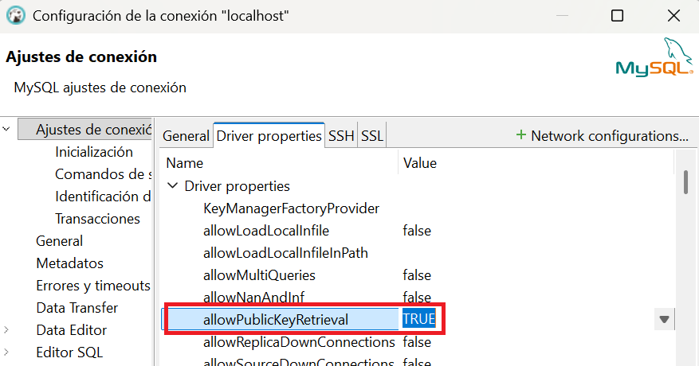
- Una vez conectado se visualizarán las BD del servidor a las que el usuario indicado en la conexión tiene acceso:
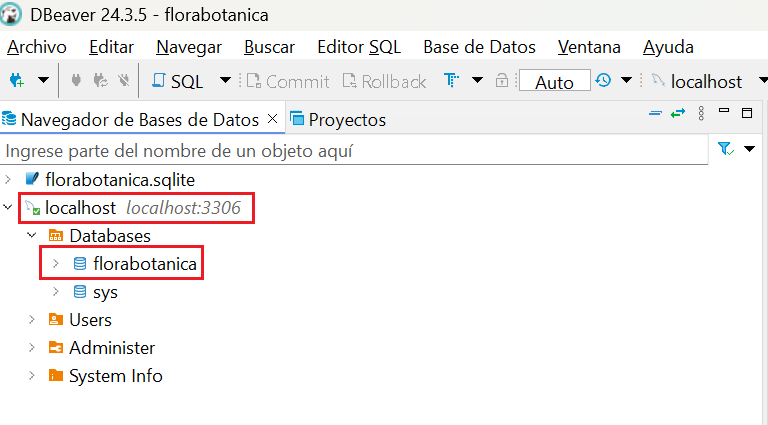
Ver funciones y procedimientos almacenados
Para poder ver el código de una función o un procedimiento almacenado en nuestra BD MySQL seguir estos pasos:
-
Desplegar el apartado Procedures de la BD.
-
Hacer clic con el botón derecho sobre la función o procedimiento, entrar en
Generar SQLy luego enDDL:
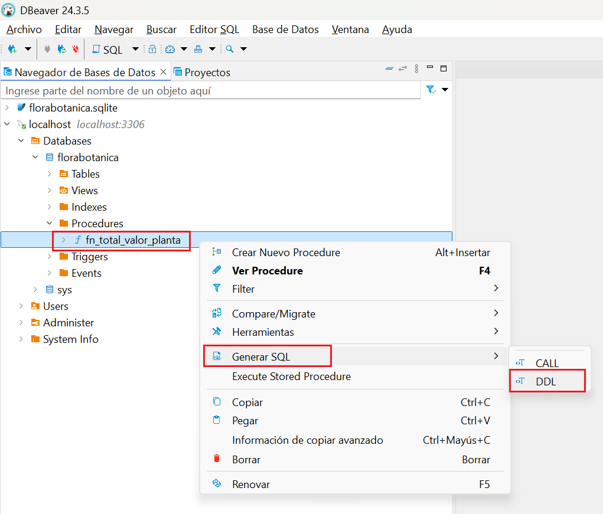
El código de la fución o procedimiento aparecerá en una ventana nueva:
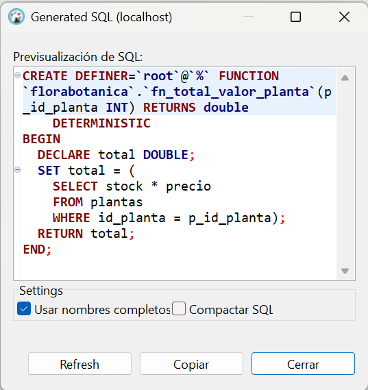
Migrar SQLite a MySQL¶
DBeaber permite migrar de forma rápida las tablas de nuestra BD SQLite (y la información que contienen) a una BD MySQL en un servidor. A continuación se describen los pasos a seguir:
-
Crear ambas conexiones, a la BD SQLite y también al servidor MySQL.
-
En el panel izquierdo, hacer clic derecho sobre la BD SQLite (o seleccionar las tablas que se quieran migrar) y hacer clic en
Exportar datos.
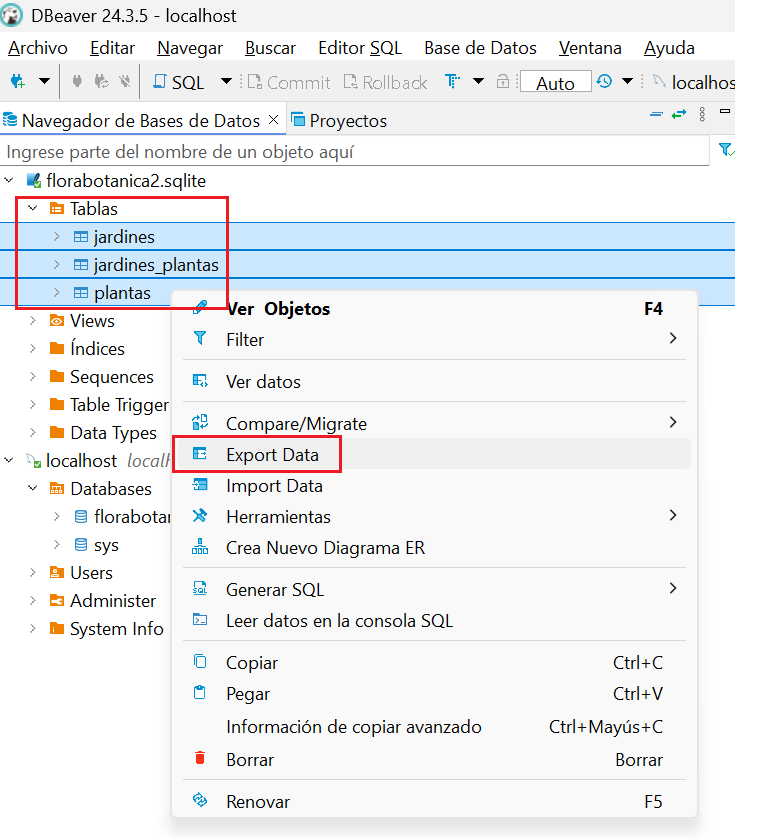
- En el asistente de exportación, seleccionar Base de datos como destino y hacer clic en el botón
Siguiente.
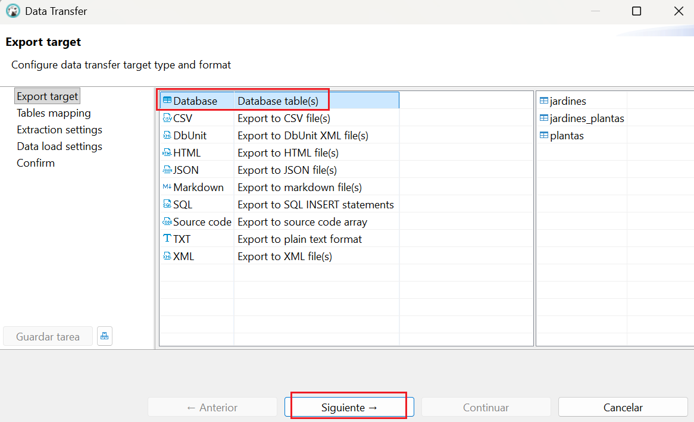
- Elegir la conexión de la BD MySQL como destino.
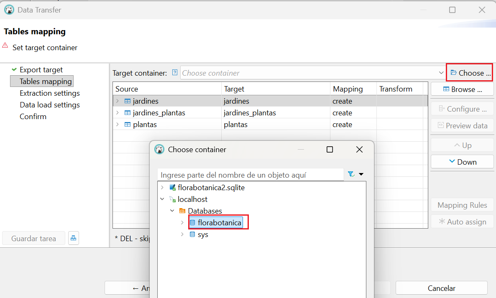
- Hacer clic en el botón
Siguientevarias veces hasta llegar a la pantalla final y en ella hacer clic en el botónContinuar. Esperar a que el proceso de crear tablas y transferir la información termine.
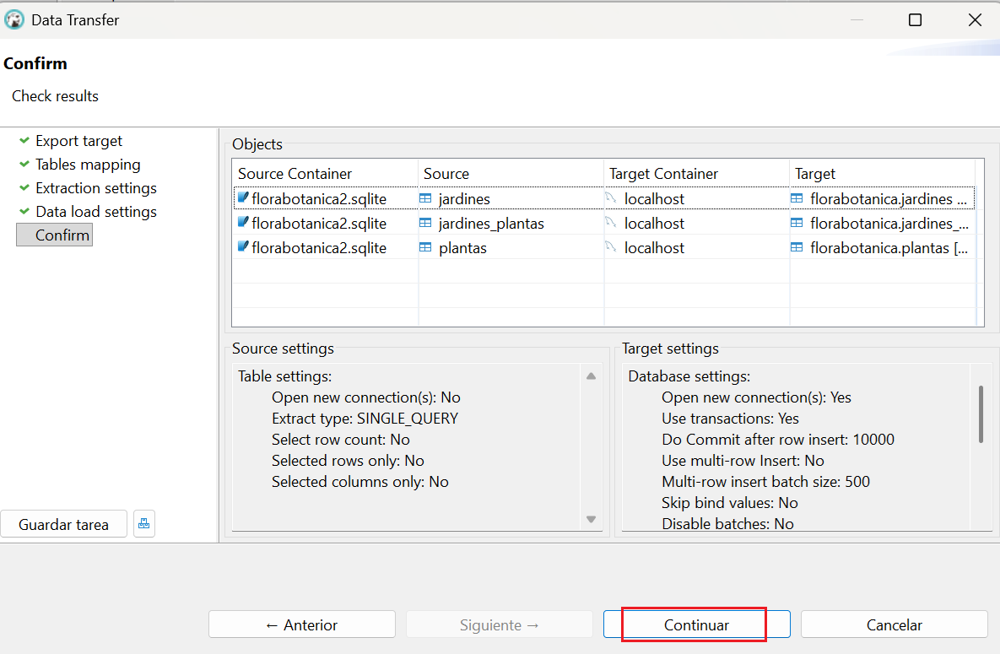
Autoría
Obra realizada por Begoña Paterna Lluch. Publicada bajo licencia Creative Commons Atribución/Reconocimiento-CompartirIgual 4.0 Internacional